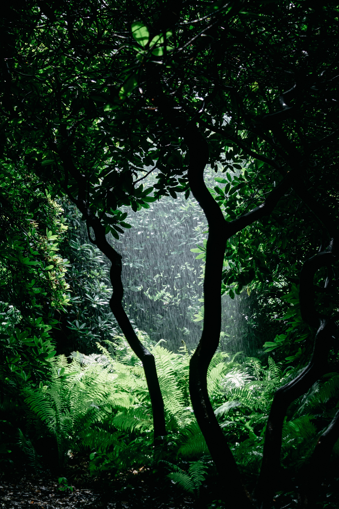
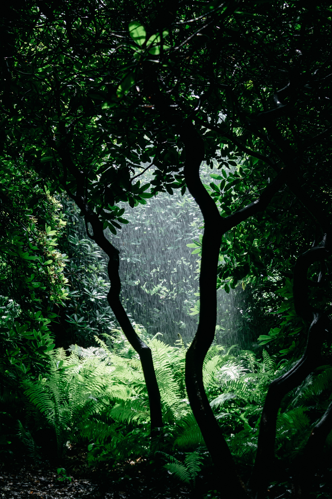

Menanam
Lantas mengapa kita harus menanam pohon? Seperti yang diketahui, pohon mempunyai peran yang sangat penting bagi kehidupan makhluk hidup. Pohon menghasilkan oksigen, dan manusia memerlukan oksigen untuk tetap hidup. Pohon juga membantu membersihkan udara yang kita hirup, serta menyaring air yang kita minum.